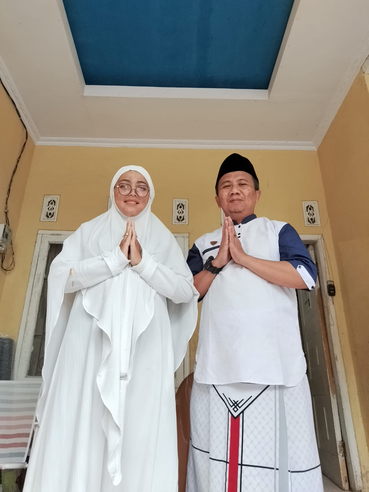
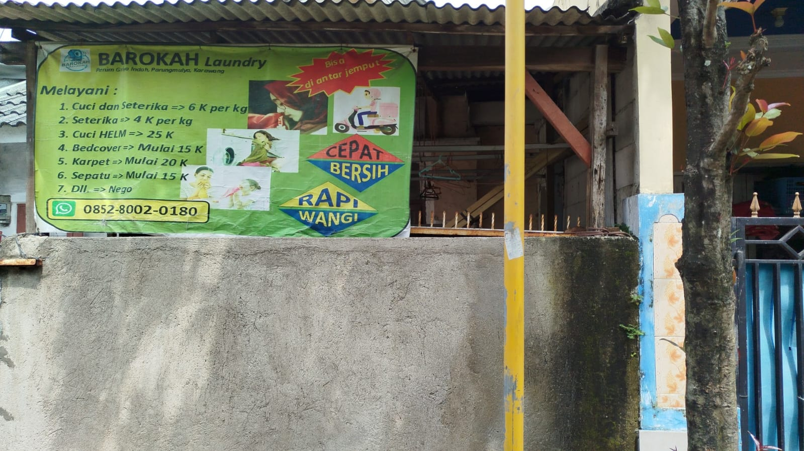

Laundry Bersih, Wangi & Selesai Tepat Waktu
Mencuci baju jadi lebih mudah di Barokah Laundry! Kami menghadirkan jasa cuci, kering, dan setrika kiloan maupun satuan berkualitas tinggi menggunakan detergen ramah lingkungan dan pewangi parfum premium tahan lama.


Solusi Kebutuhan Cuci Bersih Terbaik untuk Pakaian Anda
Barokah Laundry hadir di tengah masyarakat untuk memberikan kemudahan dan efisiensi waktu dalam mengurus pakaian kotor. Berdiri sejak tahun 2021, kami berkomitmen menjaga kepercayaan Anda dengan selalu memberikan hasil laundry yang bersih cemerlang, harum semerbak, dan terlipat rapi.
Kami menggunakan mesin cuci berteknologi tinggi dan detergen anti-bakteri yang aman bagi kulit sensitif. Proses setrika uap kami juga menjamin serat kain pakaian tetap awet dan bebas kusut.
Pengerjaan Tepat Waktu
Kami menjamin pakaian Anda selesai tepat sesuai dengan paket durasi yang disepakati.
Sistem Satu Mesin Satu Pelanggan
Pakaian Anda aman tidak akan dicampur dengan cucian pelanggan lain untuk menjamin higienitas.
Pilihan Jasa Laundry Sesuai Kebutuhan
Kami menyediakan berbagai tipe laundry kiloan dan satuan dengan harga bersahabat dan kualitas pengerjaan terbaik.
Cuci Setrika Kiloan
Layanan lengkap cuci bersih, dikeringkan mesin, lalu disetrika rapi menggunakan uap panas. Wangi dan siap pakai.
Cuci Kering Lipat
Cucian dicuci bersih secara mendalam, dikeringkan steril dengan mesin, lalu dilipat dengan rapi tanpa setrika.
Setrika Uap Saja
Khusus untuk pakaian bersih Anda yang kusut. Disetrika presisi dengan uap agar licin sempurna dan wangi segar.
Cuci Sepatu (Sneakers/Leather)
Perawatan sepatu kotor agar bersih kembali. Menggunakan cairan khusus sesuai bahan sepatu Anda agar tidak rusak.
Bedcover & Selimut
Cuci karpet kamar tidur, selimut tebal, dan bedcover besar secara optimal. Bersih, wangi wangi floral, bebas tungau.
Dry Cleaning Satuan
Metode cuci kering eksklusif untuk pakaian berbahan lembut/sensitif seperti Jas, Kebaya, Gaun, maupun gaun pesta.
Paket Member Bulanan Hemat
Paling pas untuk kebutuhan rumah tangga maupun mahasiswa dengan fasilitas jemputan gratis.
Paket Basic
Untuk kebutuhan cuci mingguan
- Kuota Cuci Setrika 20 kg
- Satu mesin satu pelanggan
- Parfum Premium
- Gratis Antar Jemput
- Pengerjaan Prioritas 24 Jam
Paket Reguler
Sangat ideal untuk keluarga kecil
- Kuota Cuci Setrika 40 kg
- Satu mesin satu pelanggan
- Pilihan Parfum Sesukamu
- Gratis Antar Jemput (Radius 3km)
- Pengerjaan Prioritas 24 Jam
Paket Premium
Solusi pakaian bersih tanpa ribet
- Kuota Cuci Setrika 65 kg
- Satu mesin satu pelanggan
- Pilihan Parfum Premium + Higienis
- Gratis Antar Jemput (Tanpa Batas Radius)
- Pengerjaan Prioritas Kilat (24 Jam)
Bagaimana Barokah Laundry Bekerja?
Langkah praktis dan mudah dari baju kotor hingga bersih rapi tanpa keluar rumah.
Hubungi via WA
Hubungi kami melalui nomor WhatsApp untuk memberi info berat estimasi pakaian, alamat jemput, dan paket laundry yang diinginkan.
Penjemputan Pakaian
Kurir ramah kami akan segera datang menjemput pakaian kotor langsung ke depan teras rumah Anda. Cucian ditimbang presisi di tempat.
Proses Cuci & Lipat
Pakaian dicuci secara higienis, dikeringkan mesin untuk mematikan kuman, lalu disetrika uap hangat agar serat kain wangi segar.
Diantar Kembali
Pakaian yang telah bersih cemerlang, rapi, dan terbungkus kemasan terlindung akan kami antar pulang kembali ke tangan Anda.
Dokumentasi Aktivitas & Hasil Laundry
Melihat secara langsung kerapian hasil pengerjaan, kebersihan outlet, serta proses laundry kami.
Apa Kata Mereka Tentang Kami?
Ulasan asli dari para pelanggan setia Barokah Laundry yang merasa terbantu setiap harinya.
"Barokah Laundry juara banget! Pelayanan cepat, setrikaannya rapi licin, dan wanginya khas tahan berhari-hari di lemari. Pas banget buat mahasiswa kosan yang sibuk kuliah."
Rian Hidayat
Mahasiswa Universitas Negeri"Sangat terbantu dengan layanan antar-jemputnya. Kurirnya selalu tepat waktu dan timbangannya jujur. Cucian boneka dan bedcover tebal dicuci bersih tanpa ada bau apek."
Dewi Lestari
Ibu Rumah Tangga"Langganan paket bulanan yang 40kg. Harganya terjangkau banget dibanding laundry lain, dan asyiknya baju kami tidak pernah dicampur dengan pakaian orang lain. Recommended!"
Andi Wijaya
Karyawan SwastaPertanyaan yang Sering Diajukan
Temukan jawaban cepat atas kebingungan Anda seputar layanan dan operasional Barokah Laundry.
Untuk layanan reguler cuci kering setrika kiloan, waktu pengerjaan normal adalah 2-3 hari kerja. Kami juga menyediakan opsi layanan Kilat (24 jam) dan Super Kilat (6 jam) jika Anda memerlukan pakaian selesai lebih cepat.
Sama sekali tidak. Kami menerapkan kebijakan ketat "Satu Mesin Satu Pelanggan". Baju Anda diproses secara terpisah sejak masuk ke dalam mesin cuci, mesin pengering, hingga meja setrika demi kebersihan maksimal dan mencegah tertukar.
Sangat mudah! Cukup klik tombol WhatsApp yang ada di website ini, informasikan lokasi alamat Anda, estimasi jumlah cucian, dan waktu penjemputan yang diinginkan. Kurir kami akan datang membawa timbangan digital portable untuk menimbang di tempat.
Kami menjamin keamanan setiap helai pakaian melalui sistem tag identitas modern. Jika terjadi kerusakan fatal atau kehilangan akibat murni kelalaian operasional kami, kami akan mengganti rugi senilai maksimal 10 kali lipat dari tarif jasa laundry pakaian tersebut.
Kami menggunakan deterjen ramah lingkungan dengan formula antibakteri khusus yang ampuh mengangkat noda membandel sekaligus membunuh kuman. Pewangi kami menggunakan parfum grade premium yang tahan lama, tidak meninggalkan noda minyak di pakaian, serta aman bagi kulit sensitif anak-anak.
Hubungi Kami & Temukan Lokasi Kami
Kunjungi outlet fisik kami di Malang untuk berkonsultasi langsung atau menyerahkan pakaian berharga Anda. Tim pelayanan kami siap menyambut Anda dengan ramah.
Alamat Utama
Jl. Raya Tlogomas No. 123, Lowokwaru, Kota Malang, Jawa Timur 65144
Jam Operasional
Senin – Sabtu: 07.00 – 21.00 WIB (Minggu Libur)
Nomor Telepon / WA
+62 812-3456-7890